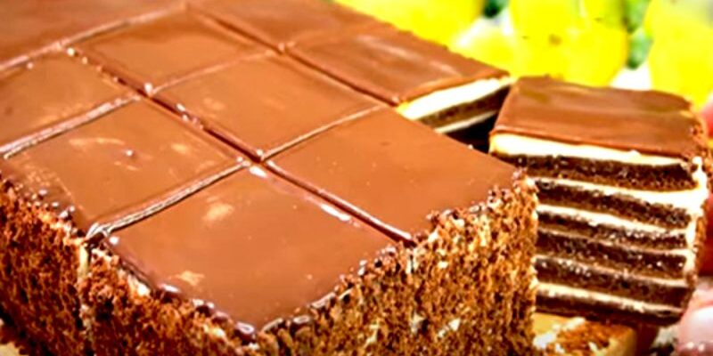

Смачний торт Молочні річки
Для приготування вам потрібні такі інгредієнти:
- Яйця: 4шт
- Цукор: 200г
- Борошно: 400г
- Молоко: 300мл
- Розпушувач: 1 ч.л.
- Сметана: 300мл
- Какао порошок: 50г
- Соняшникова олія: 50г
Для приготування крему необхідно:
- вершки для збивання 33%: 500 г
- вершковий сир: 180г
- Цукрова пудра: 3-4ст.
- лимонна кислота: за бажанням
Для глазурі необхідно:
- шоколад молочний: 100 г
- вершки: 3 ст. л.
Процес приготування торта
У чашу міксера розбити яйця та всипати цукор та ванілін. Збивати міксером протягом 4-5 хвилин до загустіння і збільшення маси в об’ємі приблизно в 2-3 рази.
У миску викласти сметану та влити молоко. Всі продукти повинні бути кімнатної температури. Перемішати вінчиком.
У глибоку миску з яєчною сумішшю додати молочну суміш. За бажанням додати олію і перемішати до однорідності. З олією коржі виходять ще м’якшими.
У велику миску просіяти борошно. Всипати какао порошок, розпушувач. Перемішати до однорідності. Всипати цю суміш у миску з інгредієнтами. Додавати частинами, щоразу перемішуючи до однорідності.
Розділити тісто на три рівні частини. Розлити його по трьом ємностям. Приготувати лист з духовки і застелити його папером для випікання. Влити одну частину тіста та розрівняти.
Духовку розігріти до 180 градусів. Відправити лист у духовку для випічки. Час випічки близько 7 – 10 хвилин. Так само випекти решту два коржі. У готових коржів обрізати краї та розділити кожен корж на дві рівні частини. Виходить шість однакових коржів.
Для приготування крему в миску для збивання викласти вершки, вершковий сир, всипати цукрову пудру та дрібкою лимонної кислоти (за бажанням). Збити до пишноти. Крем готовий.
Для збирання торта коржі промазати кремом і покласти один на одного. Зібраний торт промазати кремом зверху та збоку. З обрізків приготувати крихту за допомогою блендера. Посипати крихтою боки торта.
Готовий торт відправити в холодильник для просочення щонайменше на дві години. Для приготування глазурі поламати молочний шоколад у сотейник та влити молоко чи вершки. Розтопити на водяній бані або малому вогні плити при помішуванні.
Отриманою глазур’ю полити верх торта. Відправити торт в холодильник для застигання глазурі. Після цього можна подавати торт до столу.